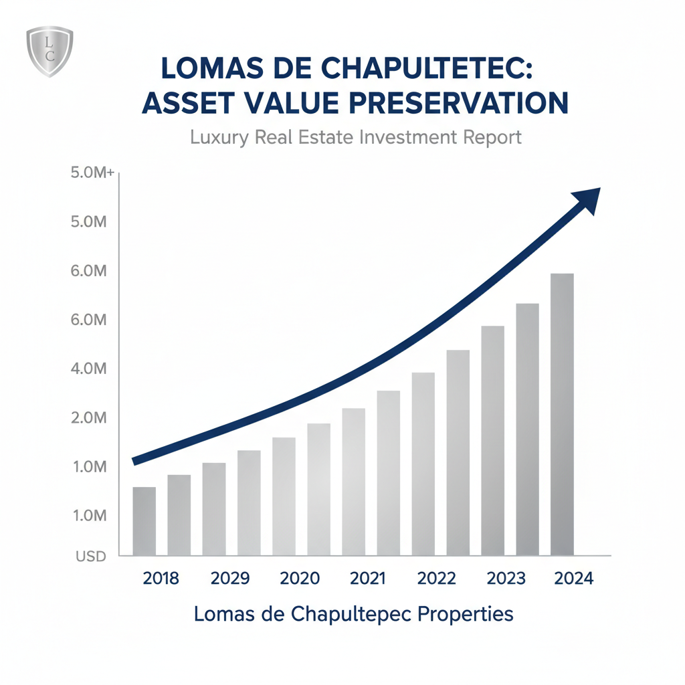

Architectural Guide 2026
Lomas de Chapultepec: Mexico City's Enduring Zenith
For the international elite, Lomas de Chapultepec is not merely an address; it is a declaration. We navigate its unique regulatory frameworks and capitalize on its resilient market, crafting bespoke architectural statements for the discerning investor in 2026.

The Resident Architect's View
I often find myself driving through Lomas in the late afternoon, watching the sunlight dapple through the ancient canopies that line its boulevards. There’s a particular hush here, a respite from the urban kinetic energy I know in Condesa. It’s not just the quiet; it’s the grandeur of the scale, the sprawling estates behind dense hedges. I sometimes stop for a quick lunch at Quintonil, savoring the inventive dishes, but mostly I just observe. I listen for the distant echo of the tamalero, a familiar city sound made somehow softer here, filtered by grand homes. This isn't where I live, but it's where I understand the pinnacle of Mexican residential ambition truly resides—a testament to thoughtful urban planning and an unwavering commitment to privacy and space.

Erik Martínez, AIA
Principal Architect. Former SHoP Architects NYC. Bringing international precision to CDMX's most complex heritage assets.
Iconic Landmarks
- Superservicio Lomas (Pedregal No. 24)
- Bosque de Chapultepec (Section 4)
- Paseo de la Reforma (Gateway)
Lomas de Chapultepec: A Legacy of Grandeur
Lomas de Chapultepec, conceived as Mexico City’s original 'garden city' for the elite, continues to define luxury living in 2026. Its foundational urban plan emphasized expansive lots, verdant landscapes, and a deliberate removal from the city's denser core. This vision persists, shaping a residential experience characterized by unparalleled privacy and generous spatial layouts. Properties here are not just homes; they are compounds, designed to accommodate a lifestyle of international standards, with ample space for staff, sophisticated security, and seamless integration of nature.
Architectural Sovereignty: The Enduring Low-Density Ethos
The architectural character of Lomas is protected by its stringent H/3/20 zoning—permitting Residential use, up to 3 levels, and mandating 20% 'Free Area' for green space. This code rigorously preserves the low-density, garden-city aesthetic established decades ago. We see a prevailing trend towards integrating mid-century architectural shells with cutting-edge 2026 smart-home infrastructure, sustainable energy, and advanced security. This approach honors the neighborhood's design heritage while elevating properties to the global standard expected by our ultra-high-net-worth clientele.
Geotechnical Reality: The Bedrock Advantage (Zone I)
Unlike the lacustrine clays of the city center, Lomas de Chapultepec stands firm. Situated on the volcanic foothills of the Sierra de las Cruces, the neighborhood is classified as Zone I (Firm Ground) on the Mexico City Seismic Zonation Map. This critical geological advantage means the sub-soil consists of consolidated rock and high-density volcanic tepetate, where ground motion during seismic events is not amplified. The reference peak ground acceleration (PGA) in this zone is approximately $a_0 = 149 cm/s^2$, allowing for significantly more economical and less complex foundation systems, such as shallow footings or slabs-on-grade.
This geological stability translates directly to structural freedom and cost efficiencies for luxury builds. We can confidently integrate larger architectural spans and utilize heavier, more opulent natural materials like stone and marble that would be structurally prohibitive or financially unfeasible in Zone III areas. However, vigilance remains paramount: a rigorous soil mechanics study is non-negotiable to identify and mitigate the rare, yet significant, risk of undocumented historical minas (subterranean voids).
Navigating Architectural Heritage: INBAL & Conservation
The aesthetic integrity of Lomas is meticulously guarded by the Instituto Nacional de Bellas Artes y Literatura (INBAL), focusing on 20th-century architecture of 'Artistic Value.' While INAH protects older monuments, INBAL’s purview extends to iconic modernist structures and entire sections within Lomas Virreyes and Lomas Altas, home to masterpieces by luminaries such as Luis Barragán and Mario Pani. The iconic 'Superservicio Lomas' at Pedregal No. 24 serves as a prime example of the neighborhood's catalogued modernist heritage.
For properties within these Conservación Patrimonial zones, renovation is an art of respectful integration. Aesthetic constraints are precise: window materials must be authentic wood or high-grade black/bronze anodized aluminum—white PVC is generally prohibited. The color palette is restricted to neutral earth tones, whites, and creams to maintain a unified visual identity. Facade integrity demands 'reversible' structural interventions that preserve the original design's vertical profile. Furthermore, new additions like pools must adhere strictly to the 20% free-area requirement, ensuring ecological balance. Unauthorized modifications can lead to an immediate Suspensión de Obra and significant fines, underscoring the necessity of expert guidance through these Heritage Hurdles.
Water Security & The Cutzamala System in 2026
Water security in Lomas de Chapultepec, a perennial concern, has seen a historic recovery in 2026. The Sistema Cutzamala, supplying a significant portion of Mexico City's water, now operates at 90.7% to 95.5% capacity—its highest levels in six years, guaranteeing at least two years of supply. Despite this, a substantial MXN 680 million upgrade, currently 20% complete, is addressing obsolete 40-year-old infrastructure. While the immediate 'Day Zero' threat has receded, Lomas remains a structurally water-stressed zone. Therefore, for any high-end villa, a cistern capacity of at least 15,000 to 30,000 liters is not merely a recommendation; it's a baseline requirement, providing 7-10 days of autonomy for a large household. Mandatory three-stage filtration (sediment, carbon, UV) is integrated into every luxury build to ensure potability, mitigating concerns from the city's aging pipes and their 40% leakage rate.
Architectural Feasibility: Lomas de Chapultepec 2026
| Project Type | Avg. Permit Time | Seismic Risk Level | Conservation Status |
|---|---|---|---|
| Ultra-Luxury Villa (Custom Build) | 24 - 48 Months | Moderate (Permit Complexity) | High Scarcity, Investor-Driven |
| Renovated "Lifestyle" House | 18 - 30 Months | Low (Established Shell) | 12% Price Premium for Modernized Infrastructure |
| Existing Older House (Ground-Up Modernization) | 30 - 42 Months | Moderate (Hidden 'Minas' / Article 302) | Strategic for 'Fix-and-Flip' with Expert Oversight |

Specialized Renovations: Beyond Aesthetics
For Lomas de Chapultepec, 'renovation' transcends aesthetic upgrades. It signifies a complete systems overhaul, integrating 21st-century infrastructure within architecturally significant shells. We employ advanced double-pane 'climalit' windows with acoustic PVB interlayers, reducing external noise by up to 45 decibels—a baseline requirement against the distinct acoustic profile of Mexico City (from gaseros to major artery traffic). Connectivity is paramount, with Totalplay's 276.9 Mbps fiber and Telmex FTTH ensuring robust digital infrastructure. Power stability, while generally high with CFE's 99% availability, is augmented in our 'Lifestyle' properties with integrated Tesla Powerwalls or high-capacity diesel generators with automatic transfer switches. This invisible modernization ensures seamless operation for the global executive.
High-End Interior Design: Functional Opulence
Our interior philosophy for Lomas centers on functional opulence, harmonizing expansive spaces with the intimate needs of ultra-high-net-worth residents. We leverage the neighborhood's architectural freedom, born from its Zone I (Firm Ground) classification, to utilize grand natural materials—polished travertine, rich tropical hardwoods, and bespoke Cantera stone. A critical design element for 2026 is human-centric lighting systems (HCL), which automatically adjust color temperature to support circadian rhythms, a vital amenity for international executives traversing time zones. The integration of dense landscape buffers and vertical gardens also plays a dual role: enhancing biophilic design while dampening street-level noise and vibration, creating serene internal environments.
The Lomas de Chapultepec Cheat Sheet
- Best Streets Paseo de la Reforma, Paseo de las Palmas, Lomas Virreyes
- Zoning Code H/3/20 (Residential, 3 Levels, 20% Free Area)
- Est. Cost / m² MXN 110k - 170k/m² (Land), $1,500 - $2,500+ USD/m² (Construction)
- Best Coffee Local espresso bar within Club de Industriales, Private Residence
- Local Quirk The distinct 'suburban-urban' hybrid feel, requiring private chauffeurs as the de-facto transport, even adjacent to corporate hubs.

The Challenge
The primary challenge in Lomas de Chapultepec is navigating its complex intersection of historical prestige, rigorous regulatory frameworks, and the significant 'cost of entry' for international investors, exacerbated by informational asymmetry.
The 'Gringo Tax' for construction labor can inflate costs by up to 50%. Furthermore, acquiring a Manifestación de Construcción in Alcaldía Miguel Hidalgo, while legally 'immediate,' entails a real-world pre-submission phase of 6 to 9 months, demanding meticulous technical opinions and studies.
Our Solution
We mitigate the 'Gringo Tax' through radical transparency, employing bilingual project managers and architects who utilize an 'open-book' accounting model. Contractors are compensated a fixed percentage (10-15%) of verifiable material and labor costs, eliminating undisclosed margins. This ensures fair market rates, which for high-end luxury construction range from $1,500 to $2,500+ USD per square meter.
We streamline the permit process by leveraging our established network of specialized DROs (Director Responsable de Obra) and premier CDMX Notarios. Our DROs are expert in navigating Article 302 'Aprovechamientos' and the 20% free-area zoning, while our Notarios provide a high-level 'legal shield,' meticulously verifying clear titles and structuring Fideicomisos for global estate tax efficiency. This professional ecosystem ensures compliance, predictability, and asset preservation.


Planning to Buy?
Don't sign a contract before a technical audit. We offer pre-purchase structural assessments in Lomas de Chapultepec.
2026 Cost Report
Get our detailed breakdown of current labor and material costs for luxury residential in CDMX.
Start Your Lomas de Chapultepec Legacy
NYC Precision. Mexican Craft. We eliminate uncertainty for international investors.